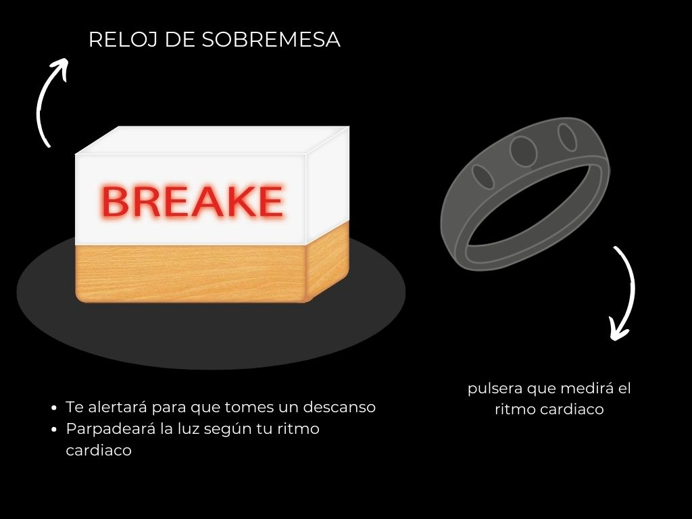

Bienvenidos a
SensKonnecT
Innovación para una vida equilibrada
¿DE QUE TRATA?
Nuestro proyecto consiste en la creación de un reloj de sobremesa que te ayudará a medir el tiempo que llevas trabajando. El usuario precionará un botón el cual iniciara el conteo de 1 hora, llegado este tiempo se encenderá una luz celeste y una voz te avisará que debes tomar un descanso y al tomar el descanso precionará el otro botón para reiniciar el conteo.
